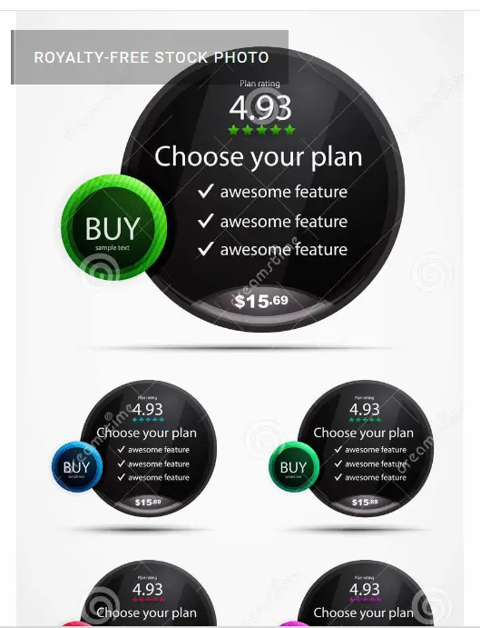

Redesign Hjemmeside
Dette var en gruppeopgave. Til at kunne arbejde i gruppen blev vi introducere til Github og Netlify.
Vi samarbejdede med en virksomhed der var interesseret i at redesigne deres nuværende website. Vi startede med at optage en interview. Interviewet blev brugt i websitet. Videoen format er kvadratisk, "mobile first princip", på denne måde kan videoen blive set i næsten fuldskærm uanset om mobilenheden er lodret eller vandret. For at give videoen denne format, under "sequence" vælger man "sequence settings", derefter vælger man under editing mode "custom" og så "frame size" 1080 x 1080. Man gennemgå hver klip for at sikre at de er placeret som ønket.
Vi gennemgik virksomhedens nuværende website og vi udarbejdede en sitemap og funktionalitetsliste. For at kunne forbedre websitet fik vi lavet diverse research og test. Vi valgte at bruge desk research, survey research samt 5 sekunders test, som løsninger til opgaven, på denne måde afdækkede vi den største udfordringen brugerne oplevede, og denne var websitets resposivitet. Vi fokuserede på at løse dette problem, samt at forbedre layoutet til websitet. Virksomheden var også intereseret i at redesigne deres logo og farver, dette mhp. at gøre dem mere kønsneutral.

I Github ( er en webbaseret platform, der indeholder gits version control funktioner, så de kan bruges i samarbejde. Det inkluderer også projekt- og teamstyringsfunktioner samt muligheder for netværk og social kodning) byggede vi vores navigations menu, css, mediequeries så alle i gruppen kunne bruge dem individuelt på hver vores side. Her brugte vi CSS custom properties for at have ens farver, fonttyper og fontsize.
I gruppen fik vi hver en side, vi skulle fokusere på. For min vedkommende var det mit ansvar at redesigne "PRISER" side. Jeg brugte desk research for at finde inspiration til mit design. Jeg valgte at bruge Pricing Tables som løsning til det nyt design da jeg syntes at det gav et bedre overblik og symmetri, den fulgte gestalt love om nærhed og lighed, negativt space blev reduceret og gav en bedre balance til siden, dette hjælper forbrugeren igennem brugerrejse (nemt at købe ydelsen) og brugeroplevelsen (nemt at navigere, og at finde den information brugeren leder efter). Jeg valgte også at bruge FAQ´s i min sides design. Virksomheden er en Fitness Centre og der var en del info der var repetitiv på alle siderne, derfor konkluderede jeg at både brugerne og virksomheden havde brug for denne løsning.
Efter at vi redesignede websitet, udførte vi igen en survey research og 2 expert test, Heuritiske og Lighthouse Test. Lighthouse test er en Developers Tool test. Der er flere måde at analysere dataen, det kan være med desktop og mobil og med plugin-versionen og inspector-versionen, med normal og inkognito tilstand.
Pilotsite
Vi arbejde med at optage og redigere videoer med Adobe Premier Pro.